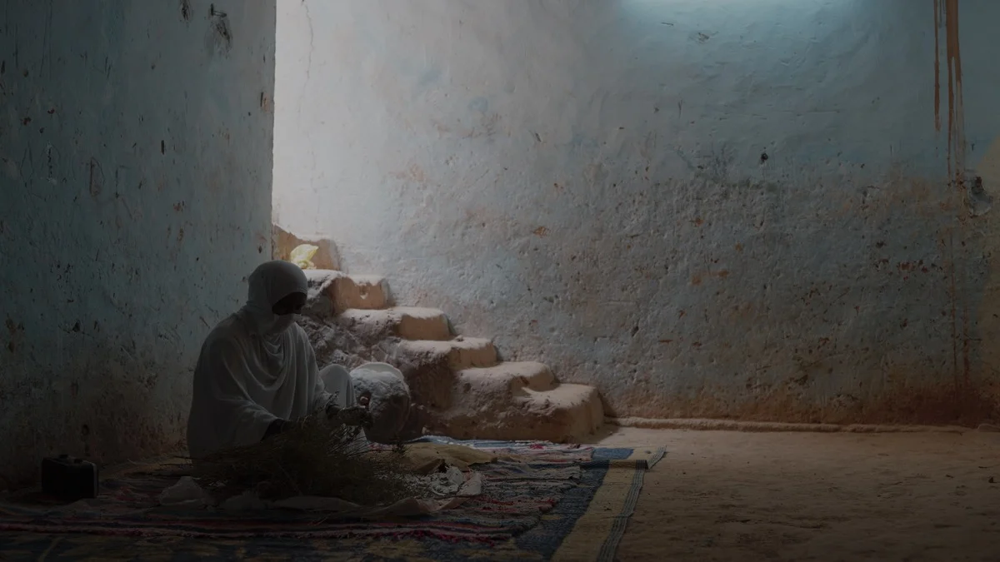

الركب التواتي: حجاج الصحراء — عالم كامل يتحرّك فوق الرمال The Touat Caravan: Pilgrims of the Desert — An Entire World Moving Across the Sands
رحلة في ذاكرة قوافل الحج الصحراوية من واحات توات إلى الحجاز، إيماناً وحكايات وروحاً لم تمتها الصحراء. A journey into the memory of Saharan Hajj caravans from the oases of Touat to the Hijaz — faith, stories, and a spirit the desert never extinguished.
اقرأ المزيدRead more